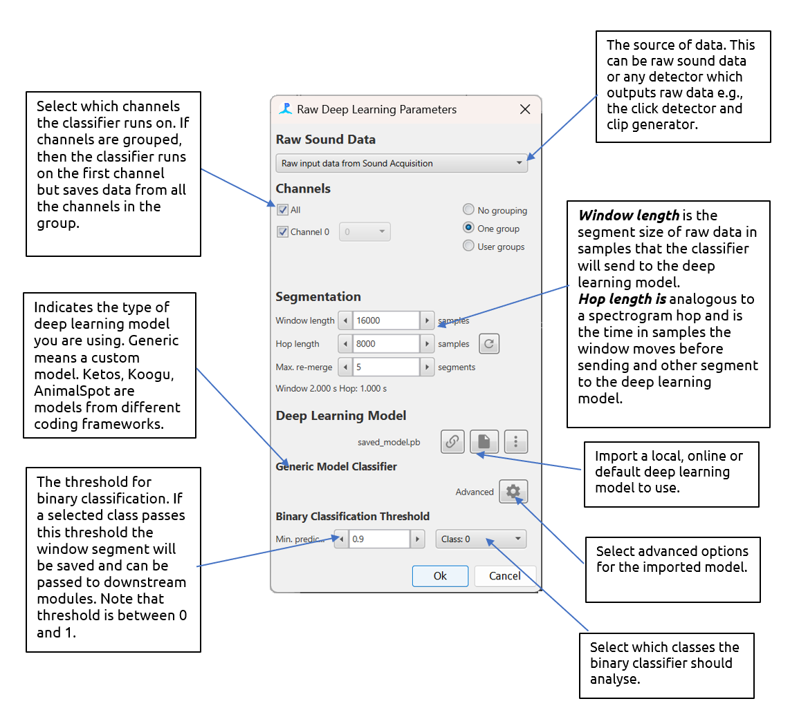
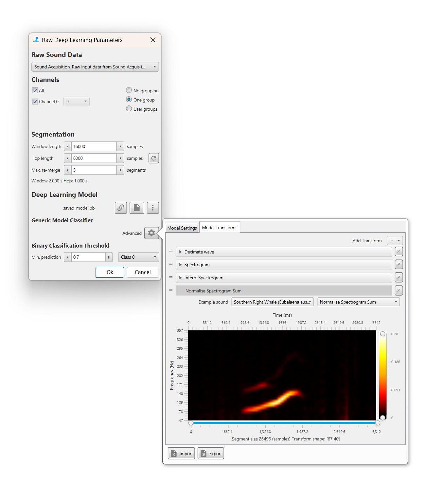
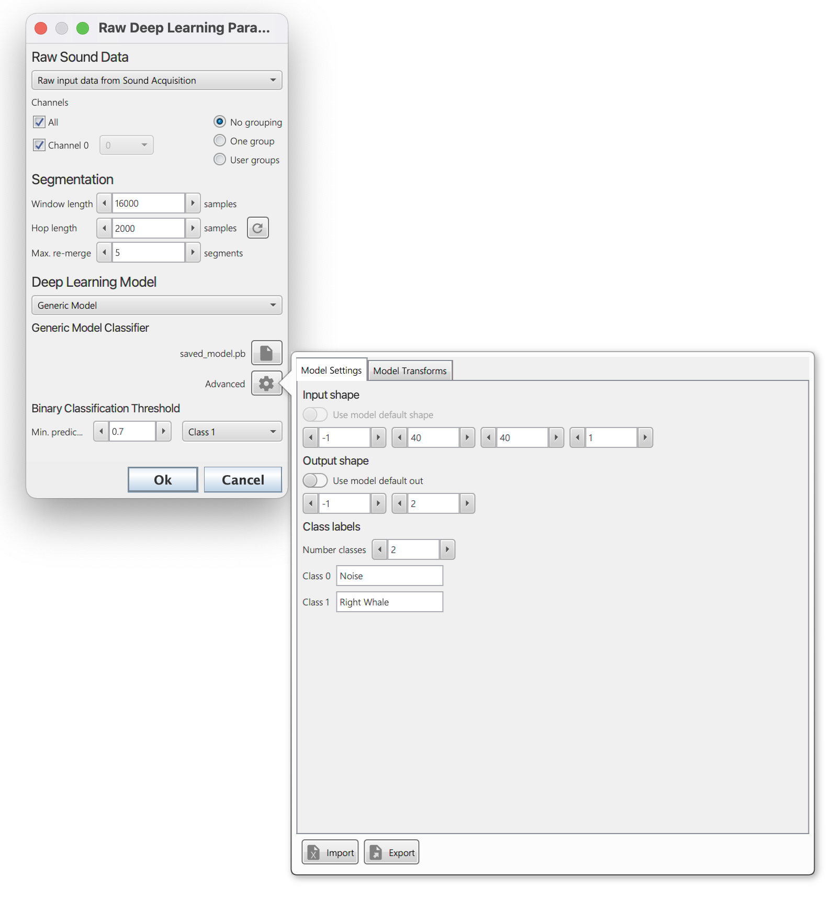
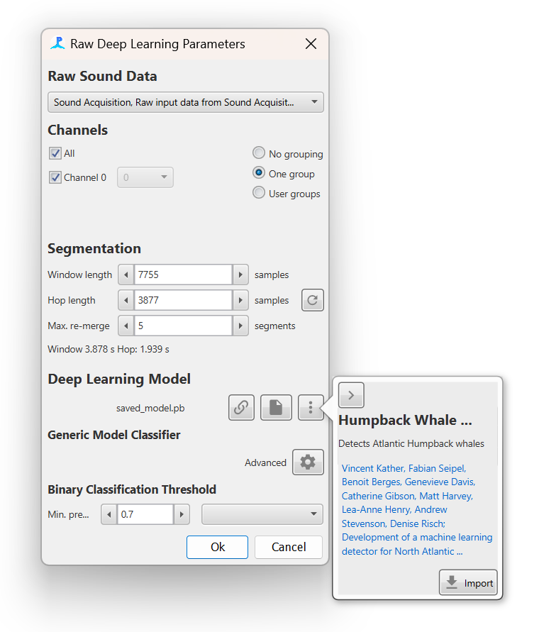

The module can be added from the File> Add modules > Classifier > Raw deep learning classifier menu or by right clicking in the data model. More than one instance of the module can be added if multiple deep learning models are required.
The module settings are opened by selecting the Settings > Raw deep learning classifier menu. The main settings pane is shown below and is split into three sections, Raw Sound Data, Segmentation and Deep Learning Model

The main settings pane for the deep learning module with descriptions
The deep learning module accepts any raw data source i.e., any data source that contains raw waveform data e.g. clicks, clips and Ishmael detections. Note that the module accepts whislte and moan detections but only if a delphinID classifier has been loaded.
If the data is continuous, e.g. from the Sound Acquisition module then deep learning detections are saved to PAMGuard's data management system if they pass a user defined prediction threshold. The raw waveform data for segments which pass prediction threshold is saved and the detection is annotated with the deep prediction results.
If the data source is an existing detection data stream, e.g. clicks or clips, then the deep learning results are saved as an annotation attached each detection. The data is segmented in exactly the same way as continuous data and thus, depending on the length of raw data within the detection, there can be more than one prediction per detection.
Channel grouping controls are used to arrange channels into groups. Channels in the same group are saved together for downstream processes. So, for example if channels 0 and 2 are in a group, then the raw waveform data from both channel 0 and 2 will be saved and can be used in downstream processes, e.g., for localisation.
The segmentation section defines how the raw data is segmented. Some deep learning models require a specific segment size and others can be run with different segment sizes. The Window Length is the size of the segment in samples. The Hop Length is the overlap (from the start of the segment) in samples. A Hop Length which is the same as the segment length means no overlap. If a prediction passes threshold, then the raw data from segments is saved to PAMGuard binary files. If concurrent segments pass a prediction threshold, then they are saved as one data unit. The Max. re-merge is the maximum number of segments that can form a single data unit before a new data unit is automatically created.
The deep learning model section is used to select the deep learning model. The drop down menu is used to select the framework the model is from e.g. Generic model. Note that each model type has a unique user interface which appears just below the drop down menu - currently these all look fairly similar.
All frameworks require a model file to be selected using the browse button (File icon). A wait icon will appear and the model will be loaded. If the deep learning model loading is successful then the filename of the model will appear (e.g. saved_model.pb)
Note: when a model is first loaded, the computer must be connected to the internet as PAMGuard will download the correct libraries for the computer to open the specific model. On Windows machine these libraries are found in a hidden folder called ai.djl. in the user account folder.
Once the model has loaded there some unique options depending on the currently selected framework.
A generic model must be set up via the Advanced menu button.

Before a sound segment can be classified it must be converted into a format suitable for the deep learning model. This is achieved by a list of transforms which convert a raw sound data into an appropriate format. Usually this involves converting to a spectrogram image and then performing a series of noise reductions and interpolation step. For the generic model users either have to manually add transforms and input the correct settings for each, or load a transforms *.pgtr setting file
The Model Transforms tab in the advanced menu pane allows a user to set up a set of transforms. The Add transfrom + button adds a transforms and these can be dragged in order using the drag handles on the left of each transform. Each transform has it's own settings pane which can be expanded to show transform specific settings. The bottom of the advanced settings pane shows a preview of the data that will be input into the deep learning model, including the shape of the input data e.g. a 100x50 image.

The Model Settings tab allows the model inputs and outputs to be defined
The Model Settings tab allows the model input shape and output shape/classes to be defined. Most models will have metadata on the input and output data and these can be set by selecting the Use default model shape and Use default model out switches respectively. Otherwise, the input and output shape and the output classes must be defined manually
The import and export buttons on the bottom of the advanced settings pane can be used to export and import settings for the generic model. This means that users do not have to manually set up transforms and input and output data whenever settings up a new PAMGuard data model and allow easier sharing of classifiers amongst researchers.
If using a deep learning model from a supported framework then all transforms are automatically set up. The transforms can be viewed and altered via the Advanced menu button but in the majority of cases these settings should not be used. For some models, it is advisable to select "Use default segment length" to change the Window length to the default for the selected model.
An AnimalSpot, Ketos or other supported deep learning model will automatically create a list of transforms with the appropriate settings. These is no need to use the advanced pane but it is there in case users wish to change transform settings for some reason
Default models are selectable from the menu button in the Deep Learning Pane. Default models are deep learning classifiers which are open source, known to be effective and have have been published in open access academic litrature; they are downloaded directly from a GitHub repository and then all associated settings are automtically applied. The default model selection pane also contains hyperlinks to the papers descirbing each model which will take users directly to the relvent website.

Default models can be downloaded. Default models are models which are published, open and have been known to work well amongst the bioacoustics community. More will be added to PAMGaurd over time. If you you would like your model to become a defualt model then drop PAMGuard support an email.
Next: Running the Deep Learning module